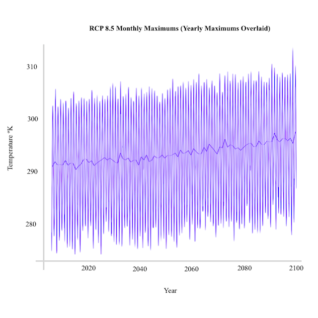
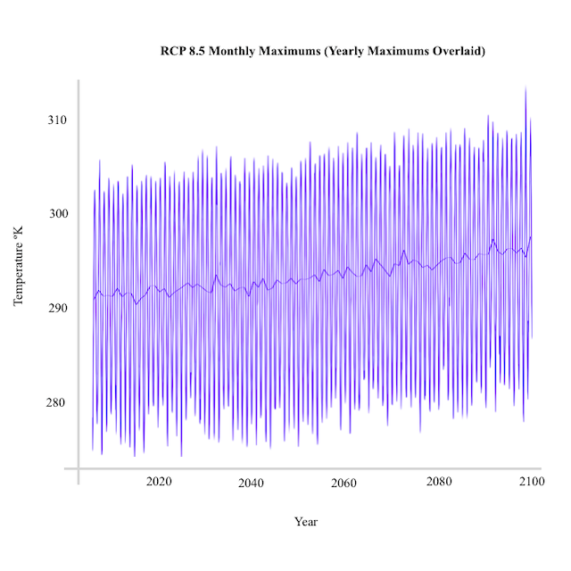

Soundtrack to the End of the World (kinda)
Sonification is the communication of data through sound. Different algorithms can be used to map numbers onto sounds, typically with higher numbers corresponding to a higher pitch.
In order to communicate numerical measurements and research, one must effectively and memorably convey dataset trends. Sonification is a very powerful way to do so. Altering the tonality of the sound, the number of notes included in the algorithm, and the frequency with which data is sampled changes the sonic experience of the listener. Some compositions could cause the data to be stored as a more potent memory than others, having a greater impact on listeners’ future actions.
This project, completed as my senior thesis at Princeton University, compared sonifications of minor and major tonality and sonifications mapped over one versus six octaves. It also explored sonifications of monthly versus yearly temperature data points.
Two datasets, in particular, were sonified. These were the 4.5 and 8.5 Representative Construction Pathways (RCPs) from The International Panel on Climate Change’s Fifth Assessment Report (IPCC5) [6] for New York City, NY, downscaled by the Community Climate System Model (CCSM) [7].
The final sonifications for the project served to compare the two datasets. They consist of a backtrack of each RCP’s monthly temperature data sonified over one octave. The yearly data for each RCP sonified over six octaves is then overlaid as a sort of melody. These pieces are below, along with their graphical equivalents.
 

It is difficult to compare between datasets of temperature predictions because changes in the atmosphere’s temperature are much more minute than the effects they induce. The maximum temperature between today and 2100 for RCP 8.5 is only 4º higher than that of RCP 4.5. This is one of the reasons why people find it so hard to internalize the effect that we are having on the natural world.
Comparing a sonification of the 4.5 pathway with that of the 8.5 pathway, both sonified according to the same algorithm, hopefully sparks a different understanding of the differences between the two datasets, and the much more drastic rise of the latter. This more drastic rise should induce a greater feeling of anxiety in a listener. The knowledge that this anxiety corresponds to a possible future is powerful.
Combining monthly with yearly data allows a listener to better internalize the complexity of the story the data is telling; the backtrack of the seasonal variation behind the gradual rise in temperature.
The visual media included in the background of these final compositions consists of my personal photography and artwork, revolving around themes of urban landscapes, climate change, and futurism.
Download the full project here or explore the text and videos below for more information.
hi
hi
hi
hi